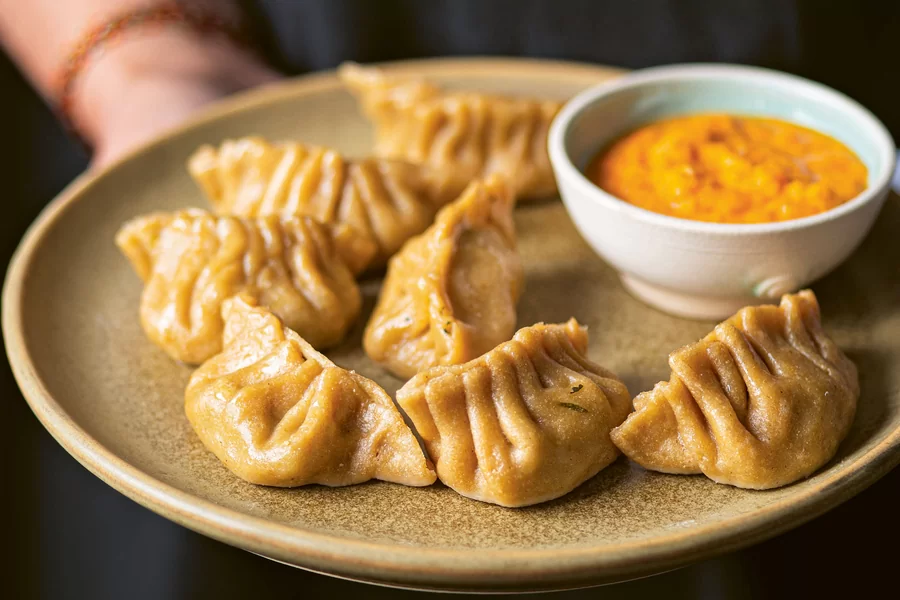

Tasty momo recipe



Here are the essential ingredients for making tasty momo:
Note : The following table provides approximate nutritional breakdown per serving:
| Components | Value | Note |
|---|---|---|
| Calories | Approx 300 kcal | N/A |
| Breakdown | 20% protein, 30% fats, 50% carbs | |
| Fiber | 3g | N/A |
Check out this video tutorial on making delicious momo: